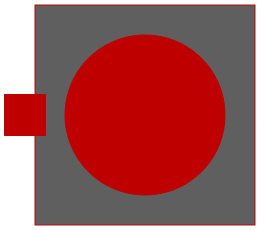

| Name | Description |
|---|---|
| PartialThermalPortInductionMachines | Partial thermal port of induction machines |
| PartialThermalAmbientInductionMachines | Partial thermal ambient for induction machines |
|
|
Partial power balance of induction machines |
| ThermalPortAIMC | Thermal port of asynchronous induction machine with squirrel cage |
|
|
Power balance of asynchronous induction machines with squirrel cage |
| ThermalPortAIMS | Thermal port of asynchronous induction machine with slipring |
|
|
Power balance of asynchronous induction machines with slipring |
| ThermalPortSMPM | Thermal port of synchronous induction machine with permanent magnets |
|
|
Power balance of synchronous induction machines with permanent magnet |
|  ThermalPortSMEE | Thermal port of synchronous induction machine with electrical excitation |
|
|
Power balance of synchronous induction machines with electrical excitation |
| ThermalPortSMR | Thermal port of synchronous induction machine with reluctance rotor |
|
|
Power balance of synchronous induction machines with reluctance rotor |